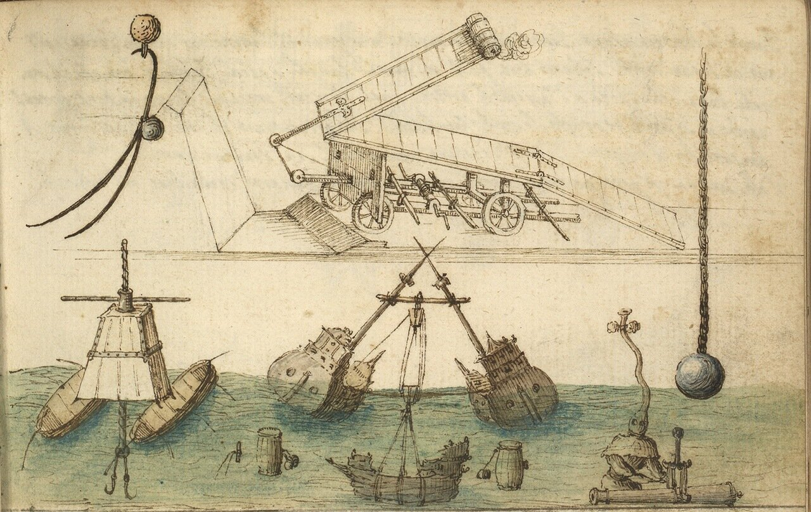

 <div style="text-align:left"><span style="font-size: medium;">При креновании судна остро встает вопрос о его остойчивости. Мы с Вами обсудим эту проблему в недалеком будущем. А сейчас - небольшое добавление к предыдущему посту. Хотя это изображение способов подъема затонувших судов и отдельных их частей на поверхность внешне и не связано с кренованием, но и при этой, и при той операции возникают примерно одинаковые силы. Так что полезно включить ее в сферу своего внимания. Да и картинка-то какая интересная!<br/><center><br/><a href="http://fotki.yandex.ru/users/galley42/view/1034898" target="_blank" target="_blank" rel="nofollow"></a><br/></center><br/><br/>Я взял ее из сборника рукописей [Sketchbook on military art, including geometry, fortifications, artillery, mechanics, and pyrotechnics], находящегося в Библиотеке Конгресса США (Rosenwald Coll. ms. no. 27 ). Ввиду того, что в сборнике присутствуют работы различных авторов различных эпох, авторство данного листа можно установить лишь при помощи посторонних инструментов. Насколько я понял, это работа португальского военного инженера Luís Serrão Pimentel (1613-1679). Мы обязательно в дальнейшем познакомимся с его трудами.</span></div> 